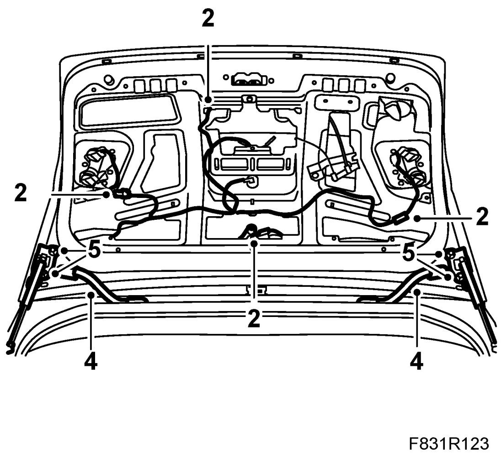
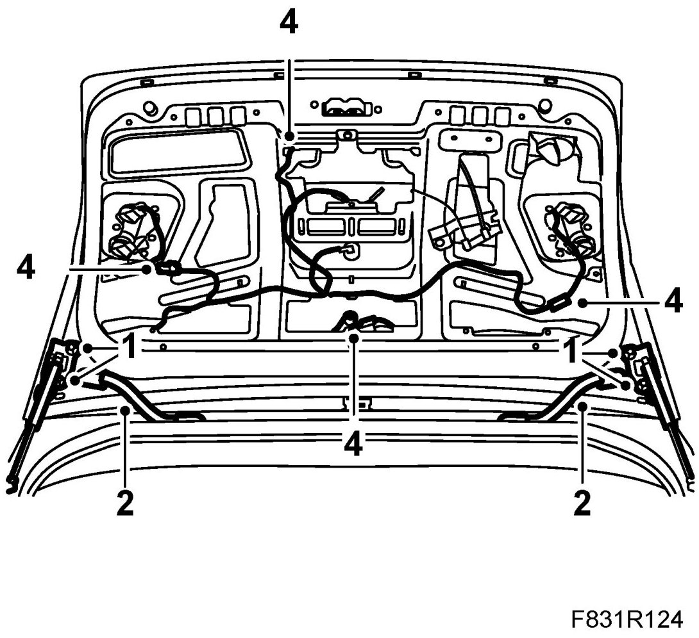

Boot Lid, CV
Boot Lid, CV
To remove
1. Remove the bootlid trim.
2. Unplug the connectors.

3. Remove the wiring clips.
4. Remove wiring grommets. Pull out the wiring from the bootlid.
5. Remove the bootlid bolts. Remove the bootlid together with an assistant.
To fit
1. Together with an assistant, lift the bootlid into fitting position. Fit the bootlid bolts.

2. Insert the wiring through the grommet openings in the bootlid. Fit the wiring grommets.
3. Place the wiring in fitting position in the bootlid. Fit the wiring clips.
4. Plug in the wiring connectors in the bootlid.
5. Fit the boot lid trim.
6. Check bootlid alignment. Adjust if necessary, see Bootlid adjustment, CV .